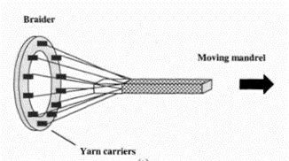

Kaj je anizotropija?
Izraz anizotropija izhaja iz dveh grških besed isoo - enako, tropos - smer in predpone an, ki pomeni negacijo. Anizotropija je torej značilnost snovi, da se lastnosti spreminjajo s smerjo.
Anizotropija v kompozitih
Polimerni kompoziti so vsi anizotropni materiali, saj so lastnosti kompozita odvisna od smeri ureditve armature znotraj kompozita(najbolj pogosto je armatura v obliki vlaken, kot prikazano na spodnji sliki). Z razvojem polimernih kompozitov pa so odkrili za izboljšavo anizotropnosti, da dosežejo kvazi-izotropnost(delna izotropija).
Ena izmed prvih rešitev za anizotropijo je bila. da so enosmerne laminatne strukture so zlagali, tako da so bila vlakna orientirana v x in y smeri(shema spodaj). S tem so dosegli kvazi-izotropijo med x in y osjo.

Problem takega postopka izboljšave je, da nobena vlakna niso urejena v smeri debeline(smer z osi), kar je lahko velika pomanjkljivost, saj predstavlja manjšo odpornost v tej smeri. Torej če želimo v z smeri izboljšati odpornost je edina možnost, da zložimo več slojev tega kompozita drug na drugega, kar podaljša in podraži manufakturni postopek. Pri izgradnji nekaterih letal je potrebno 60 slojev takega polimernega kompozita, da dosežemo želeno odpornost.
Za rešitev tega problema so začeli razvijati 3D kompozite, ki imajo vlakna urejena v vse 3 smeri. Za razvoj 3D kompozitov se je najbolj usmerila letalska in vesoljska industrija zaradi povečanja povpraševanja po kompozitih za nosilne strukture letal, helikopterjev, ter vesoljskih plovil. 3D kompoziti so narejeni z uporabo tehnik za oblikovanje tekstila in sicer prepletanje(postopek na sliki spodaj), pletenje, tkanje, šivanje/vbadanje. Poleg tega pa so razvili proces izdelave imenovan Z-pinning(Z-pripenjanje)

Šivanje ali vbadanje kompozitov v z smeri z visoko odpornimi vlakni se je izkazalo za preprosto in poceni metodo za izdelavo 3D kompozitov. Postopek obsega vbadanje vlakna(ponavadi ogljik, steklo ali kevlar) skozi sloje kompozita z industrijskim šivalnim strojem.
Z-pripeti kompoziti (proces Z-pinning) so ustvarjeni s patentiranimi Z-fiber™ žebljički. Te žebljički so narejeni iz kovinske žice, ki so nato vstavljeni v vnaprej impregnirane trakove ali suha vlakna za izdelova 3D kompozitov kot prikazuje Slika 4.5: Z-žebljički v kompozitu